1. Welcome & starter setup
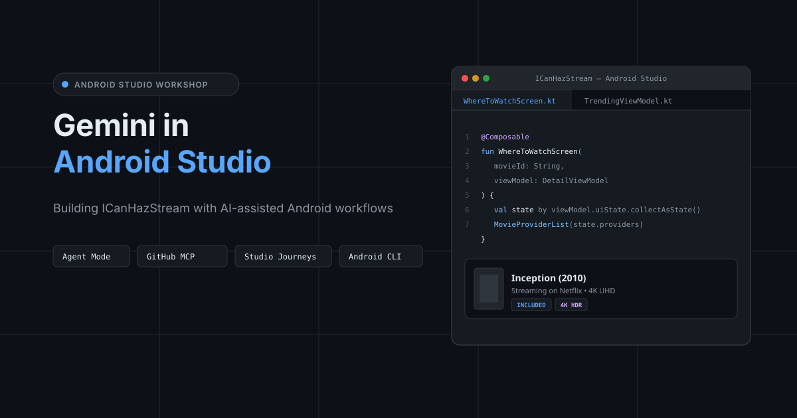
ICanHazStream (me.kartikarora.icanhazstream) is a multi-module Android app that tracks movie and TV streaming availability across platforms like Netflix, Disney+, Prime Video, Apple TV, Stan, and Binge.
In this workshop, you will use Gemini in Android Studio to modernise legacy code, generate Compose UI from wireframes, scaffold multi-module features with Agent Mode, connect external context via GitHub MCP, and automate tests with Studio Journeys and the Android CLI.
Prerequisites
Android Studio: Android Studio Rabbit 2 (2026.2.2 Canary 3).
Google Account: Signed in to Android Studio for Gemini access.
JDK: JDK 25 (bundled with Android Studio).
1. Install the Android CLI
The android CLI allows terminal scripts and AI agents to interact directly with Android Studio tools and daemons.
Install via terminal:
macOS (Apple Silicon):
curl -fsSL https://dl.google.com/android/cli/latest/darwin_arm64/install.sh | bash
macOS (Intel):
curl -fsSL https://dl.google.com/android/cli/latest/darwin_x86_64/install.sh | bash
Linux (x86_64):
curl -fsSL https://dl.google.com/android/cli/latest/linux_x86_64/install.sh | bash
Windows (cmd):
curl -fsSL https://dl.google.com/android/cli/latest/windows_x86_64/install.cmd -o "%TEMP%\install-android.cmd" && "%TEMP%\install-android.cmd"
Verify installation:
android --version
2. Install the @kartikarora Compose theme skill
The @kartikarora v2.0.0 Tokyo Neo-Brutalist Compose design system skill is pre-installed in .agents/skills/kartikarora-compose-theme/ so Gemini reuses existing :core:ui components (TokyoCard, MovieCard, BrandButton, SlidingTabs, BrandStatement, ProviderBadge) instead of generating generic composables. Run npx skills install to refresh it to the latest release:
npx skills install https://distribute.kartikarora.me/ai/kartikarora-compose-theme.skill
3. Configure Agent Permissions
Grant appropriate file permissions for Gemini and Agent Mode to read and scaffold files in the multi-module project:
Open the Settings menu (Android Studio > Settings on macOS, or File > Settings on Windows & Linux).
Navigate to Tools > AI > Agent permissions.
Under File Permissions, configure the following options:
Read files in the project: Set to Always allow.
Write source files in the project: Set to Always allow (allows Agent Mode to scaffold composables, ViewModels, and test classes).
Delete or rename files in the project: Set to Always allow (for seamless code refactoring).
Access gitignored files: Keep at Ask every time (sensitive credentials and keys remain protected).
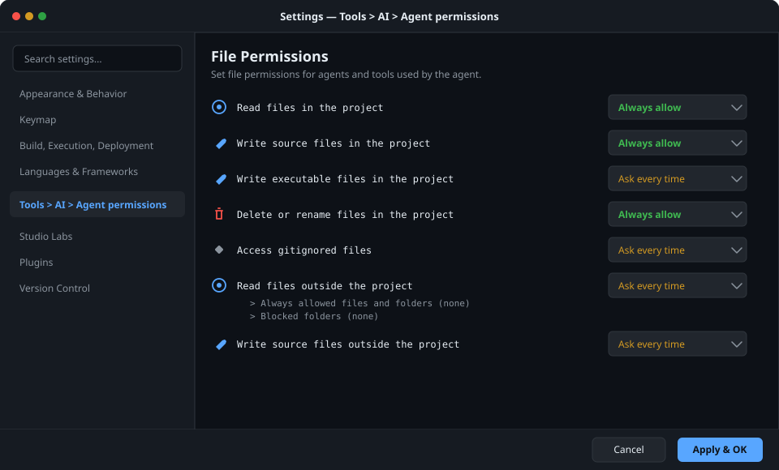
4. Enable Journeys in Studio Labs
Enable natural language user journey testing with automated multimodal vision assertions:
In Settings, navigate to Studio Labs in the sidebar.
Check Journeys to activate the Studio Journeys testing engine.
Click Apply & OK.
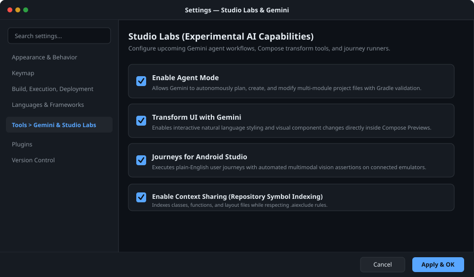
5. Open the Agent tool window
Open the dedicated Agent tool window via View > Tool Windows > Agent (or click the Agent icon in the right sidebar). This window is your primary assistant interface for conversational coding, multi-module feature scaffolding, and MCP tool execution.
2. Clone starter & project guardrails
Clone the starter repository, establish engineering conventions in AGENTS.md, and block sensitive files with .aiexclude.
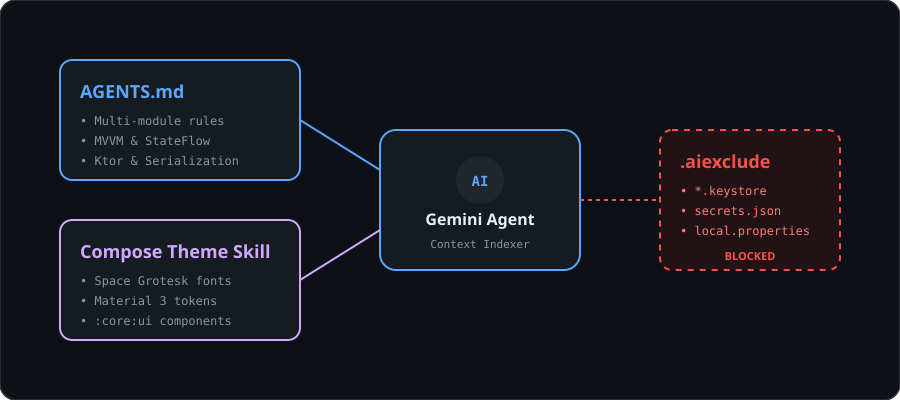
1. Clone and open the starter project
Clone the workshop repository from GitHub:
macOS / Linux:
git clone https://github.com/kartikarora/ICanHazStream.git
cd ICanHazStream
Windows (cmd / PowerShell):
git clone https://github.com/kartikarora/ICanHazStream.git
cd ICanHazStream
Open ICanHazStream in Android Studio Rabbit 2 (2026.2.2 Canary 3) using File > Open and let the Gradle sync complete.
Unlike an empty template, ICanHazStream is a fully functional, interactive app right from Step 1:
On launch: The app loads and displays trending movies (e.g. Dune: Part Two, Spider-Man: Across the Spider-Verse, Oppenheimer) in a rich Compose interface.
Inspect availability: Tapping any movie navigates directly to the Australian streaming providers view on Where to Watch, with live category and option tabs.
Explore navigation: Users can seamlessly toggle between the Explore movie catalogue and the Watchlist via the bottom navigation bar.
Throughout this workshop, you'll use Gemini in Android Studio to modernise internal architecture layers, migrate legacy Java math and XML components to Compose design tokens, expand feature capabilities with Agent Mode, and test live journeys without starting from scratch.
Key modules include:
:app: Navigation graph (StreamNavGraph.kt).:feature:explore: Trending movies and provider discovery.:feature:detail: Movie details and "Where to Watch" availability.:feature:watchlist: Saved watchlist and price drop alerts.:core:ui: Ready-made @kartikarora v2.0.0 design tokens, bundled Chivo & JetBrains Mono fonts, and components (ICanHazStreamTheme,TokyoCard,MovieCard,BrandButton,SlidingTabs,BrandStatement,StatusBadge,ProviderBadge,RatingChip,StreamTopBar).:core:data: Repositories and Ktor Client 3.6.0 networking.:core:model:@Serializabledomain models (Movie,StreamingProvider).:core:testing: In-memory test fakes (FakeMovieRepository).
2. Define project engineering standards
Create AGENTS.md in the project root by running this terminal command:
cat << 'EOF' > AGENTS.md
# ICanHazStream — AI Agent Rules
This document defines the rules and conventions for AI coding assistants working in this project.
## Architecture
- **Multi-module project** using convention plugins from `build-logic/`.
- **Package namespace:** `me.kartikarora.icanhazstream.*`
- **Source convention:** Kotlin files in `src/main/kotlin/`, Java files in `src/main/java/`.
## Brand Design System
The `:core:ui` module implements the **@kartikarora v2.0.0 Tokyo Neo-Brutalist Compose Design System** (dynamic color disabled):
- `ICanHazStreamTheme` / `KartikAroraTheme` — Material 3 theme using Akihabara Cyan (`#0084C7` light / `#00F0FF` dark), Caution Yellow (`#E6B800` light / `#FFE600` dark), and Concrete / Obsidian surfaces
- Bundled **Chivo** (`FontWeight.Black` headings with `-0.03em` tracking) and **JetBrains Mono** typography in `core/ui/src/main/res/font/`
- `KartikAroraShapes`, `KartikAroraCustomShapes`, and 8dp `MaterialTheme.spacing` scale
- `TokyoCard` / `MovieCard` — Neo-brutalist card containers with 2.dp border, solid offset shadow, and hover/focus/press physics
- `BrandButton` — High-contrast tactile buttons (`Primary`, `Secondary`, `Outline`, `Ghost`, `Small`)
- `SlidingTabs` — Segmented tab bar with active cyan pill and Caution Yellow offset shadow
- `BrandStatement` — Editorial callout with 3.dp signal left border
- `StatusBadge`, `SpecCard`, `TelemetryMetric`, `FeatureCard`, `CLICommandPill`, `ArtifactRow`, `StanceView`, `KeynoteRow`, `FastTransitionSpec`
- `ProviderBadge`, `RatingChip`, `StreamTopBar`
**Always use these components and `MaterialTheme.spacing` tokens instead of creating raw Composables or hardcoded values.**
## Installed AI Skill
The `kartikarora-compose-theme` skill (installed in `.agents/skills/`) teaches the AI
about the pre-built `:core:ui` component library. When generating UI code, always import
`me.kartikarora.icanhazstream.ui.components.*` and `me.kartikarora.icanhazstream.ui.theme.*`.
## Testing Philosophy
- **Fakes over Mocks**: Use test fakes from `:core:testing` (e.g., `FakeMovieRepository`).
- **JUnit 5** for unit tests, **Turbine** for `StateFlow` testing.
- **Compose UI Test** for instrumented tests.
## JetBrains Stack
- **Ktor Client 3.6.0** for HTTP networking
- **kotlinx.serialization 1.11.0** for JSON parsing
- **kotlinx.coroutines 1.11.0** for async operations
EOF
3. Block sensitive files from AI indexing
Create .aiexclude in the project root to prevent API keys and credentials from being indexed or sent to cloud models:
cat << 'EOF' > .aiexclude
# Block local keystores, private credentials, and solution code from Gemini indexing
*.jks
*.keystore
local.properties
google-services.json
.solutions/
EOF
3. In-editor refactoring & live diffs
Refactor active production code using specific architecture guidelines and review live diffs in the editor.TrendingMoviesViewModel already powers the live trending movie list shown on launch; in this step, you'll modernise its reactive stream from Android LiveData to Kotlin coroutines StateFlow.
1. Open the target ViewModel
Open TrendingMoviesViewModel.kt in the :feature:explore module:
TrendingMoviesViewModel.kt
private val _trendingMovies = MutableLiveData<List<Movie>>()
val trendingMovies: LiveData<List<Movie>> = _trendingMovies
2. Refactor via in-editor Gemini
Highlight the _trendingMovies declarations in the editor, right-click, and select Gemini > Generate Code with Gemini (or Refactor with Gemini). Enter your refactoring prompt:
Refactor the _trendingMovies, _isLoading, and _selectedCategory LiveData streams to StateFlow with initial values and expose immutable asStateFlow() properties, then update TrendingMoviesScreen.kt to collect them with collectAsStateWithLifecycle().
Review the side-by-side diff preview and click Apply Changes (or click the Apply button in the diff bar).
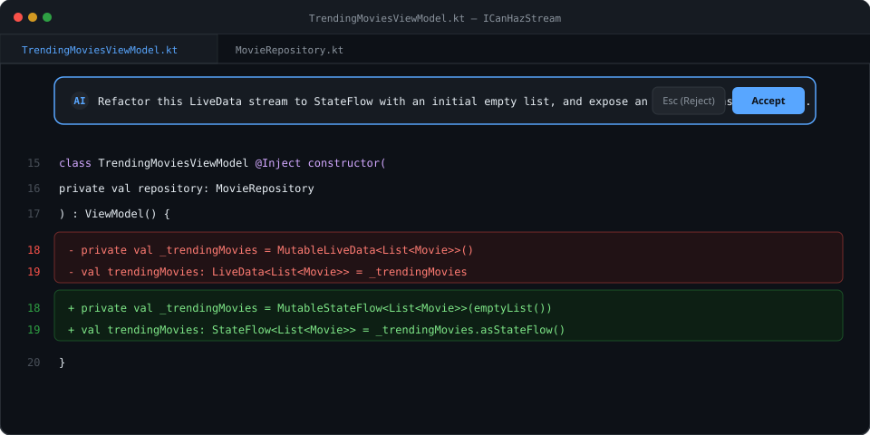
TrendingMoviesViewModel.kt
private val _trendingMovies = MutableStateFlow<List<Movie>>(emptyList())
val trendingMovies: StateFlow<List<Movie>> = _trendingMovies.asStateFlow()
In TrendingMoviesScreen.kt, replace the LiveData DisposableEffect observers with collectAsStateWithLifecycle() so :feature:explore continues compiling cleanly.
4. Java to Kotlin migration
Convert legacy Java utilities into idiomatic Kotlin functions.
1. Inspect the legacy calculation logic
Open WatchCostUtils.java in the :core:data module:
WatchCostUtils.java
package me.kartikarora.icanhazstream.data.legacy;
public class WatchCostUtils {
public static double calculateOptimalWatchCost(double monthlySubscription, double rentPrice, int expectedViews) {
if (monthlySubscription <= 0.0 || rentPrice <= 0.0 || expectedViews <= 0) {
return 0.0;
}
double totalRentalCost = rentPrice * expectedViews;
return Math.min(monthlySubscription, totalRentalCost);
}
}
2. Run the transform with the Agent tool window
Open the Agent tool window (View > Tool Windows > Agent) and submit:
@WatchCostUtils.java Convert this Java utility class to an idiomatic Kotlin file with a top-level calculation function in package me.kartikarora.icanhazstream.data.
Save the output to WatchCostUtils.kt in the :core:data module, update the import in WhereToWatchScreen.kt from me.kartikarora.icanhazstream.data.legacy.WatchCostUtils to me.kartikarora.icanhazstream.data.WatchCostUtils, and delete the old .java file.
WatchCostUtils.kt
package me.kartikarora.icanhazstream.data
fun calculateOptimalWatchCost(
monthlySubscription: Double,
rentPrice: Double,
expectedViews: Int
): Double {
if (monthlySubscription <= 0.0 || rentPrice <= 0.0 || expectedViews <= 0) return 0.0
val totalRentalCost = rentPrice * expectedViews
return totalRentalCost.coerceAtMost(monthlySubscription)
}
5. Legacy XML to Compose
Migrate an XML layout and ViewHolder to a declarative @Composable using brand design tokens.
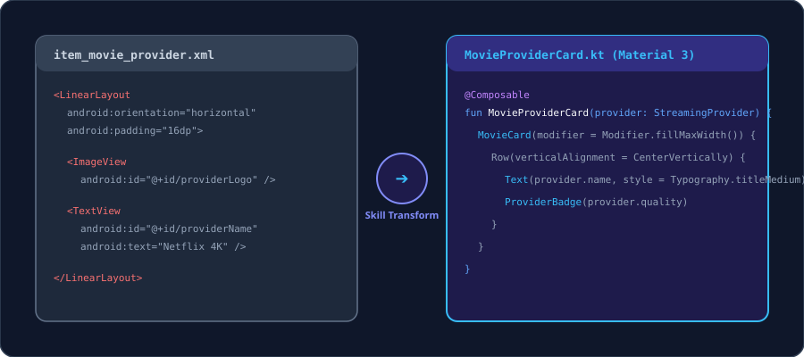
1. Inspect the layout and target file
Open item_movie_provider.xml and MovieProviderCard.kt in the :feature:explore module:
MovieProviderCard.kt
package me.kartikarora.icanhazstream.explore
import androidx.compose.runtime.Composable
import androidx.compose.ui.Modifier
import me.kartikarora.icanhazstream.model.StreamingProvider
@Composable
fun MovieProviderCard(
provider: StreamingProvider,
onClick: () -> Unit,
modifier: Modifier = Modifier
) {
}
2. Convert with the Agent tool window
Open the Agent tool window (View > Tool Windows > Agent or from the right sidebar) and enter:
@item_movie_provider.xml Convert this XML layout and its ViewHolder into a declarative Jetpack Compose composable for MovieProviderCard.kt. Use the @kartikarora v2.0.0 design tokens, MaterialTheme.spacing, MovieCard (backed by TokyoCard), and ProviderBadge components from :core:ui.
MovieProviderCard.kt
package me.kartikarora.icanhazstream.explore
import androidx.compose.foundation.layout.*
import androidx.compose.material3.*
import androidx.compose.runtime.Composable
import androidx.compose.ui.Alignment
import androidx.compose.ui.Modifier
import me.kartikarora.icanhazstream.model.StreamingProvider
import me.kartikarora.icanhazstream.ui.components.MovieCard
import me.kartikarora.icanhazstream.ui.components.ProviderBadge
import me.kartikarora.icanhazstream.ui.theme.spacing
@Composable
fun MovieProviderCard(
provider: StreamingProvider,
onClick: () -> Unit,
modifier: Modifier = Modifier
) {
val spacing = MaterialTheme.spacing
MovieCard(
onClick = onClick,
modifier = modifier
.fillMaxWidth()
.padding(horizontal = spacing.small, vertical = spacing.extraSmall)
) {
Row(
modifier = Modifier.fillMaxWidth(),
verticalAlignment = Alignment.CenterVertically,
horizontalArrangement = Arrangement.SpaceBetween
) {
Column(modifier = Modifier.weight(1f)) {
Text(
text = provider.name,
style = MaterialTheme.typography.titleMedium,
color = MaterialTheme.colorScheme.onSurface
)
Spacer(modifier = Modifier.height(spacing.extraSmall))
Text(
text = "Quality: ${provider.quality} • Plan: ${provider.planType}",
style = MaterialTheme.typography.bodySmall,
color = MaterialTheme.colorScheme.onSurfaceVariant
)
}
ProviderBadge(text = provider.quality)
}
}
}
6. Day-to-day assistant tools
Speed up daily tasks with built-in documentation, code explanation, and commit helpers.
1. Generate KDoc comments
Open Movie.kt in the :core:model module. Open the Agent tool window (View > Tool Windows > Agent) and submit this prompt:
@Movie.kt Generate comprehensive KDoc comments for this data class and all its properties.
Movie.kt
package me.kartikarora.icanhazstream.model
import kotlinx.serialization.SerialName
import kotlinx.serialization.Serializable
/**
* Represents a movie or TV title available across streaming services.
*
* @property id Unique TMDB identifier.
* @property title The official release title.
* @property overview Synopsis and storyline summary.
* @property posterPath Relative poster image path from TMDB.
* @property releaseDate The theatrical or digital release date (YYYY-MM-DD format).
* @property voteAverage Average user rating score out of 10.
* @property providers List of streaming providers and purchase options for this movie.
*/
@Serializable
data class Movie(
val id: String,
val title: String,
val overview: String,
@SerialName("poster_path") val posterPath: String? = null,
@SerialName("release_date") val releaseDate: String? = null,
@SerialName("vote_average") val voteAverage: Double = 0.0,
val providers: List<StreamingProvider> = emptyList(),
)
2. Explain regular expressions
Open WatchOption.kt in the :core:model module. Notice the deep-link validation logic:
WatchOption.kt
fun isValidDeepLink(): Boolean {
val urlPattern = Regex("""^https:\/\/(?:www\.)?(?:netflix|disneyplus|primevideo|stan|binge)\.com(?:\/[a-zA-Z0-9_\-\.\/?%&=]*)?$""")
return deepLinkUrl != null && urlPattern.matches(deepLinkUrl)
}
Highlight the regular expression pattern, right-click, and select AI > Explain Code. Android Studio automatically sends the selection to the Agent tool window and provides an instant breakdown of capture groups, non-capturing groups, and supported streaming domains.
3. Generate commit messages
Open the Commit tool window (from the left tool window bar or View > Tool Windows > Commit), stage modified files, and click Suggest Commit Message (the sparkle icon):
feat(explore): convert movie provider item layout to Compose and add KDoc
7. Wireframe to Compose
Attach UI wireframe sketches directly into the Agent tool window to generate or refine Compose layouts.In ICanHazStream, tapping any trending movie already opens a working Where to Watch screen displaying Australian streaming options (Stream, Rent, Buy). In this step, you'll use Gemini to refine the layout structure directly from a visual wireframe mockup.
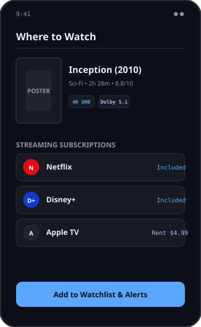
1. Locate the wireframe asset
Use assets/wireframe-where-to-watch.png (or the diagram above) and open WhereToWatchScreen.kt in the :feature:detail module.
2. Refine screen from mockup
Attach assets/wireframe-where-to-watch.png in the Agent tool window with this prompt:
Generate the Jetpack Compose screen for WhereToWatchScreen.kt matching this wireframe mockup.
Include:
1. Movie poster header inside a TokyoCard with title, overview, and rating.
2. Value pick callout using BrandStatement.
3. Stream / Rent / Buy selector using SlidingTabs.
4. Provider option cards using TokyoCard, ProviderBadge, and BrandButton.
Use @kartikarora v2.0.0 components and MaterialTheme.spacing from :core:ui.
Paste the generated composable into WhereToWatchScreen.kt.
WhereToWatchScreen.kt
package me.kartikarora.icanhazstream.detail
import androidx.compose.foundation.layout.*
import androidx.compose.foundation.lazy.LazyColumn
import androidx.compose.foundation.lazy.items
import androidx.compose.material3.*
import androidx.compose.runtime.*
import androidx.compose.ui.Alignment
import androidx.compose.ui.Modifier
import me.kartikarora.icanhazstream.model.Movie
import me.kartikarora.icanhazstream.model.StreamingProvider
import me.kartikarora.icanhazstream.model.WatchOptionType
import me.kartikarora.icanhazstream.ui.components.BrandButton
import me.kartikarora.icanhazstream.ui.components.BrandButtonVariant
import me.kartikarora.icanhazstream.ui.components.BrandStatement
import me.kartikarora.icanhazstream.ui.components.ProviderBadge
import me.kartikarora.icanhazstream.ui.components.RatingChip
import me.kartikarora.icanhazstream.ui.components.SlidingTabs
import me.kartikarora.icanhazstream.ui.components.TokyoCard
import me.kartikarora.icanhazstream.ui.theme.spacing
@Composable
fun WhereToWatchScreen(
movie: Movie?,
onProviderClick: (StreamingProvider) -> Unit,
modifier: Modifier = Modifier,
) {
if (movie == null) return
val spacing = MaterialTheme.spacing
var selectedTabIndex by remember { mutableIntStateOf(0) }
val tabs = listOf("Stream", "Rent", "Buy")
val currentType = when (selectedTabIndex) {
0 -> WatchOptionType.STREAM
1 -> WatchOptionType.RENT
else -> WatchOptionType.BUY
}
val filteredProviders = movie.providers.filter { it.type == currentType }
LazyColumn(
modifier = modifier
.fillMaxSize()
.padding(spacing.small),
verticalArrangement = Arrangement.spacedBy(spacing.small),
) {
item {
TokyoCard(modifier = Modifier.fillMaxWidth()) {
Row(
modifier = Modifier.fillMaxWidth(),
horizontalArrangement = Arrangement.SpaceBetween,
verticalAlignment = Alignment.CenterVertically
) {
Text(text = movie.title, style = MaterialTheme.typography.headlineMedium)
RatingChip(rating = movie.voteAverage)
}
Spacer(modifier = Modifier.height(spacing.extraSmall))
Text(text = movie.overview, style = MaterialTheme.typography.bodyLarge)
}
}
item {
BrandStatement(
quote = "Value Pick: Stream or rent options compared in AU\$",
modifier = Modifier.fillMaxWidth(),
)
}
item {
SlidingTabs(
tabs = tabs,
selectedTab = tabs[selectedTabIndex],
onTabSelected = { selectedTabIndex = tabs.indexOf(it) },
tabLabel = { it },
)
}
items(filteredProviders) { provider ->
TokyoCard(
modifier = Modifier.fillMaxWidth(),
onClick = { onProviderClick(provider) },
) {
Row(
modifier = Modifier.fillMaxWidth(),
horizontalArrangement = Arrangement.SpaceBetween,
verticalAlignment = Alignment.CenterVertically
) {
ProviderBadge(name = provider.name, badgeColor = MaterialTheme.colorScheme.primary)
BrandButton(
text = "Watch",
variant = BrandButtonVariant.Small,
onClick = { onProviderClick(provider) },
)
}
}
}
}
}
8. Interactive Compose Previews
Iterate on visual styling directly inside the Compose Preview panel using natural language.
1. Add preview functions
Open the Agent tool window (View > Tool Windows > Agent) and submit this prompt:
@WhereToWatchScreen.kt Add a @PreviewLightDark Composable preview function WhereToWatchPreview() wrapped in ICanHazStreamTheme.
@PreviewLightDark
@Composable
fun WhereToWatchPreview() {
ICanHazStreamTheme {
WhereToWatchScreen(
movie = Movie(
id = "preview_1",
title = "Dune: Part Two",
overview = "Paul Atreides unites with Chani and the Fremen while seeking revenge against the conspirators who destroyed his family.",
releaseDate = "2024-03-01",
voteAverage = 8.6,
providers = listOf(
StreamingProvider("netflix", "Netflix", null, WatchOptionType.STREAM, 16.99, "4K"),
StreamingProvider("apple_tv", "Apple TV", null, WatchOptionType.RENT, 6.99, "4K"),
StreamingProvider("prime", "Prime Video", null, WatchOptionType.BUY, 24.99, "4K"),
),
),
onProviderClick = {},
)
}
}
2. Style via AI preview tools
Build the project (select Build > Make Project from the main menu, or click the hammer icon in the toolbar) to render the preview.
In the Compose Preview toolbar, click the AI icon and select Change UI (under For Selected Preview).
Prompt:
Render 4K/HD quality labels with StatusBadge(variant = StatusBadgeVariant.Secondary), keep provider rows in TokyoCard, and use BrandButton for Watch actions.
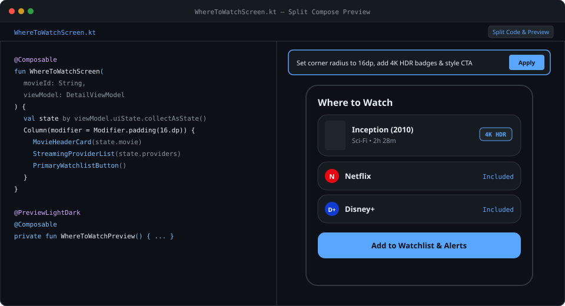
9. Connecting GitHub MCP
Connect Gemini to the GitHub MCP Server to ground code generation in repository issues, PRDs, and pull requests.
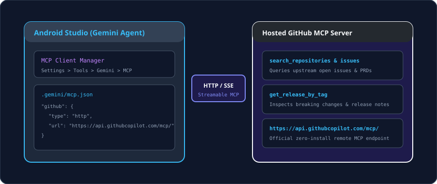
1. Configure the MCP server
Add the GitHub MCP server to .gemini/mcp.json (or via Settings > Tools > AI > MCP Servers):
.gemini/mcp.json
{
"mcpServers": {
"github/github-mcp-server": {
"httpUrl": "https://api.githubcopilot.com/mcp/",
"headers": {
"Authorization": "Bearer ${GITHUB_PERSONAL_ACCESS_TOKEN}"
},
"timeout": -1,
"enabled": true,
"trust": false,
"includeTools": [],
"excludeTools": []
}
}
}
2. Query upstream context in the Agent tool window
In the Agent tool window, enter:
Using the connected GitHub MCP server, fetch the product requirements and accepted schema from issue #1 in kartikarora/ICanHazStream ('Watchlist price drop alerts and regional availability notifications'). Ground the implementation in our existing data layer.
Gemini queries get_issue and get_file_contents over MCP to retrieve the exact requirements before scaffolding.
10. Multi-module Agent Mode
Use Agent Mode to plan, write, and link features across multiple modules autonomously.
While the starter app already links the bottom navigation bar to an initial WatchlistScreen with an empty state, this step uses Agent Mode to upgrade :feature:watchlist into a full-featured reactive screen with WatchlistUiState, price alert toggles, swipe actions, and enhanced navigation wiring.
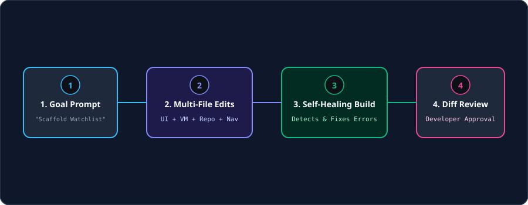
1. Launch Agent Mode
In the Agent tool window (View > Tool Windows > Agent), submit your prompt to build the feature across modules:
Build the "Watchlist & Price Drop Alerts" feature in :feature:watchlist.
1. Create WatchlistViewModel.kt exposing WatchlistUiState (Loading, Empty, Success).
2. Create WatchlistRepository.kt with functions to add movies, track rental price drops, and observe saved titles.
3. Build WatchlistScreen.kt with movie cards, price alert toggles, and swipe-to-delete.
4. Add the watchlist route to the root StreamNavGraph.kt in :app.
Follow the rules in AGENTS.md and use Ktor 3.6.0 and StateFlow.
2. Review and apply changes
Agent Mode creates WatchlistViewModel.kt, WatchlistRepository.kt, and WatchlistScreen.kt in the :feature:watchlist module, and registers the route in StreamNavGraph.kt in the :app module.
Review the structured multi-file diff and click Apply All Changes.
11. Automated build repair
Let Agent Mode run Gradle build tasks and fix missing dependencies automatically.
1. Request automated compilation
In the Agent tool window, submit:
Check and compile the project by running a Gradle build for :feature:watchlist. If any dependencies or imports are missing in build.gradle.kts or libs.versions.toml, diagnose and fix them.
2. Self-healing cycle
Agent Mode:
Executes
./gradlew :feature:watchlist:assembleDebug.Spots missing test dependencies (
runTest,turbine).Updates
build.gradle.ktsin the:feature:watchlistmodule and syncs Gradle.Re-runs the build until compilation succeeds.
12. Unit tests & Turbine
Generate ViewModel unit tests backed by in-memory fakes and Turbine Flow assertions.
1. Open the test skeleton
Open WatchlistViewModelTest.kt in the :feature:watchlist module.
2. Generate unit tests with the Agent tool window
Open the Agent tool window (View > Tool Windows > Agent) and submit your test prompt:
@WatchlistViewModel.kt Generate unit tests for WatchlistViewModel inside WatchlistViewModelTest.kt using FakeMovieRepository from :core:testing and app.cash.turbine.test. Include test cases for empty state, adding a movie to watchlist, and price drop notifications.
WatchlistViewModelTest.kt
package me.kartikarora.icanhazstream.watchlist
import app.cash.turbine.test
import kotlinx.coroutines.test.runTest
import me.kartikarora.icanhazstream.model.Movie
import me.kartikarora.icanhazstream.testing.FakeMovieRepository
import org.junit.jupiter.api.Assertions.assertEquals
import org.junit.jupiter.api.Test
class WatchlistViewModelTest {
private val fakeRepository = FakeMovieRepository()
private val viewModel = WatchlistViewModel(repository = fakeRepository)
@Test
fun `when movie is added to watchlist, state updates with saved title`() = runTest {
viewModel.uiState.test {
assertEquals(WatchlistUiState.Empty, awaitItem())
val sampleMovie = Movie(
id = "m1",
title = "Inception",
overview = "Dream within a dream",
releaseYear = 2010,
rating = 8.8,
posterUrl = "https://image.tmdb.org/t/p/w500/inception.jpg"
)
viewModel.addToWatchlist(sampleMovie)
val successState = awaitItem() as WatchlistUiState.Success
assertEquals(1, successState.watchlist.size)
assertEquals("Inception", successState.watchlist.first().title)
}
}
}
Run tests by clicking the Run test gutter icon (the green play arrow next to the test class or function) to confirm they pass.
13. Crash debugging in Logcat
Diagnose and patch exceptions directly from Logcat using Ask Gemini.
1. Trigger the crash
Run the app on the emulator, open Explore, tap "Untracked Indie Release #9", and set region filter to "Australia (AU)".
2. Inspect in Logcat
Open the Logcat tool window (from the bottom tool window bar or View > Tool Windows > Logcat).
Find the error:
FATAL EXCEPTION: main java.lang.NullPointerException: Missing streaming provider list for region 'AU' in MovieDetailViewModel.kt:42Click Ask Gemini next to the stack trace.
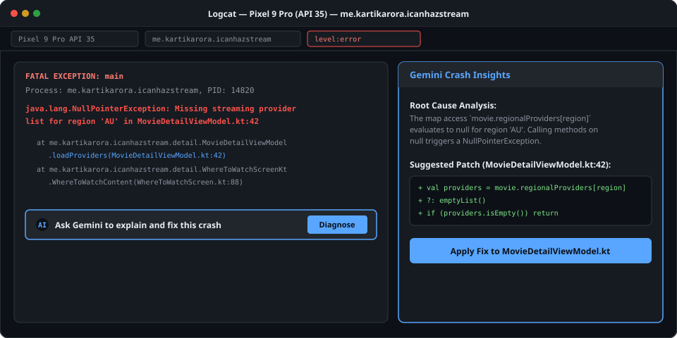
3. Apply the patch
Gemini highlights the unhandled null provider list in MovieDetailViewModel.kt:
val providers = movie.regionalProviders[selectedRegion] ?: emptyList()
if (providers.isEmpty()) {
_uiState.value = MovieDetailUiState.NoProvidersAvailable(selectedRegion)
return
}
Apply the change and re-run to verify the fix.
14. Studio Journeys E2E tests
Describe end-to-end user journeys in plain English and execute them on a live emulator using multimodal vision AI.Because ICanHazStream provides real, interactive UI flows right from the start, you can validate realistic user journeys—such as browsing trending movies, inspecting streaming providers on Where to Watch, and verifying pricing—end-to-end on a live device.
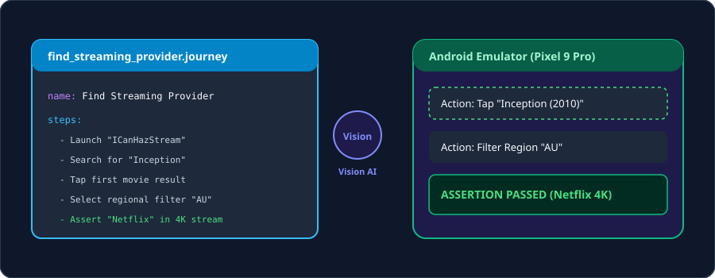
1. Inspect the journey definition
Open app/src/journeysTest/find_streaming_provider.journey.xml:
find_streaming_provider.journey.xml
<?xml version="1.0" encoding="utf-8"?>
<journey name="find_streaming_provider">
<description>Find streaming provider availability for Dune: Part Two</description>
<actions xml:space="preserve">
<action>View the trending movies list on the Explore screen</action>
<action>Tap on the movie card for "Dune: Part Two"</action>
<action>Switch to the "Stream" tab</action>
<action>Verify Netflix is available at AU$16.99/mo in 4K</action>
<action>Tap "Watch" button to trigger provider launch</action>
</actions>
</journey>
2. Configure build variants
Journeys run against specific build variants configured in your module-level build file. When created with the wizard, the test suite targets the currently active build variant.
If you switch active build variants in Android Studio (for example, to a different product flavor or build type), configure the test suite under testOptions in app/build.gradle.kts:
android {
// ...
testOptions {
suites {
create("journeysTest") {
useJunitEngine {
inputs += listOf(com.android.build.api.dsl.AgpTestSuiteInputParameters.TESTED_APKS)
includeEngines += listOf("journeys-test-engine")
enginesDependencies(libs.junit.platform.launcher)
enginesDependencies(libs.junit.platform.engine)
enginesDependencies(libs.journeys.junit.engine)
}
targetVariants += listOf("debug")
}
}
}
}
3. Run the journey
Ensure Journeys is enabled under Settings > Studio Labs.
Select an Android Emulator or connected device from the toolbar.
Open
app/src/journeysTest/find_streaming_provider.journey.xmlin the editor. You can switch between Code view and Design view in the top right.In Design view, click Run Journey, or in Code view, click the Run icon in the gutter next to the
<journey>tag.Android Studio creates a Journeys Test configuration, builds and deploys the app, connects to Gemini, and executes the journey on the live device.
When complete, inspect the Journeys Test Results panel to see the step breakdown, device screenshots, and Gemini's reasoning for each action.
15. Headless Android CLI
Use the Android CLI to inspect project structure, find symbols, render previews, inspect UI layouts, and search official documentation headlessly.
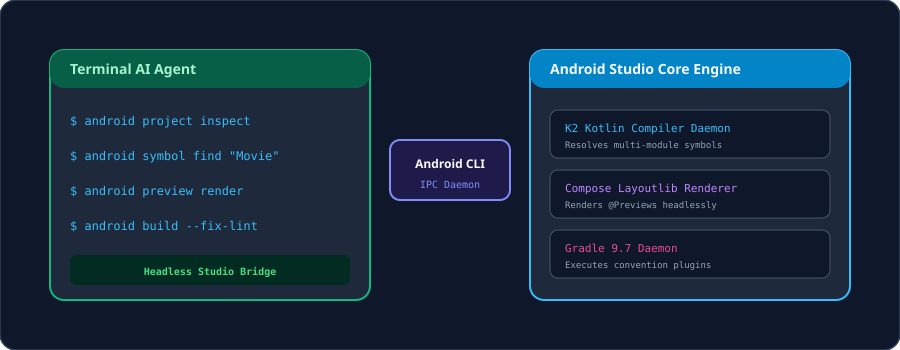
1. Project inspection and Studio status
Inspect project metadata and verify running Android Studio instances:
# Describe project structure and build artifact paths
android describe
# Check connected Android Studio instances and open projects
android studio check
2. Symbol navigation and code analysis
Find symbol declarations and run static analysis on source files through Android Studio:
# Find the declaration of a symbol across project modules
android studio find-declaration MovieRepository
# Find usages of a symbol in the open project
android studio find-usages WhereToWatchScreen
# Analyze a source file for errors and warnings in Studio
android studio analyze-file feature/detail/src/main/kotlin/me/kartikarora/icanhazstream/detail/WhereToWatchScreen.kt
3. Headless Compose preview rendering
Render Compose previews directly to an image without opening the editor:
# Render WhereToWatchPreview to a PNG file
android studio render-compose-preview \
feature/detail/src/main/kotlin/me/kartikarora/icanhazstream/detail/WhereToWatchScreen.kt \
WhereToWatchPreview \
--output-image-file=preview.png
4. Search official documentation
Query authoritative Android developer documentation directly from the terminal:
# Search official Android documentation for Jetpack Navigation 3 guides
android docs search "Navigation Compose Type Safety"
5. Manage Android AI skills
Discover and install specialised official Android agent skills to expand AI capabilities:
# List installed and available Android skills (e.g. edge-to-edge, styles, navigation-3)
android skills list
# Search for skills by keyword
android skills find "navigation"
# Install a specific skill
android skills add navigation-3
16. App Quality Insights
Review production telemetry from Firebase Crashlytics and Google Play Vitals inside Android Studio with one-click Gemini diagnostics.
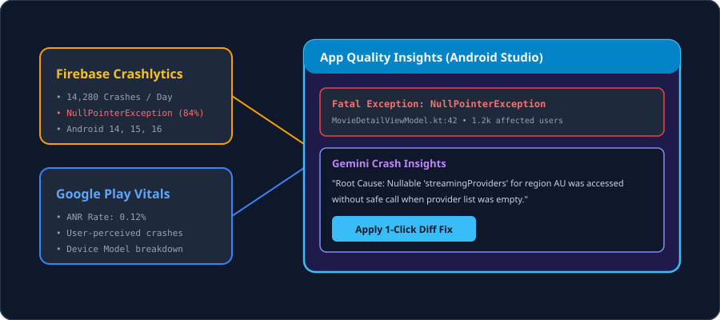
Open AQI: Navigate to View > Tool Windows > App Quality Insights.
Review insights: Click Explain Crash with Gemini on recurring crash clusters.
Apply fix: Apply the suggested patch directly to your Kotlin source file.
17. Summary & next steps
Summary of key workflows
Guardrails: Ground code generation with
AGENTS.md,.aiexclude, and design token skills.In-Editor AI: Refactor
LiveDatatoStateFlowand explain regex using the Agent tool window and AI > Explain Code.Modernisation: Convert legacy Java calculation math and XML layouts to Compose.
Design to Code: Generate UI from wireframes and style interactively in Compose Previews.
Context & Tooling: Connect upstream repository context via GitHub MCP.
Agent Mode: Scaffold multi-module features and self-heal Gradle build issues.
Verification: Test
StateFlowwith Turbine fakes, debug crashes in Logcat, and automate E2E testing with Studio Journeys and the Android CLI.
Next steps
On-device AI: Experiment with Gemini Nano via AICore using the ML Kit GenAI Prompt API.
Prompt Library: Store reusable team prompts in
.idea/project.prompts.xml.Questions & Feedback: Reach out at hello@kartikarora.me.